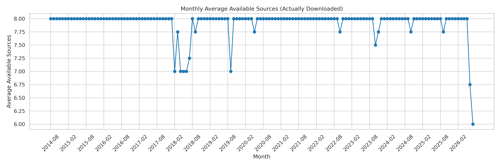

Introduction
In the previous post, we created a dictionary (called wayback_snapshot_dates) that stores all the snapshots to be downloaded. The logic behind snapshot selection was explained and statistics about the selected snapshots were shared. However, the Wayback Machine API (which was used to determine which snapshots exist) was not 100% honest: some snapshots seemed to not actually be available for download, while others were basically empty. This post outlines the story of downloading the html files and then handling the missing data, while making sure that the data dictionary stays up to date.
Downloading the Snapshots
The Wayback Machine is limited in resources and slow to answer requests. This introduced some technical difficulties during download. Firstly, the rate of requests had to be limited, in order to not overwhelm the server and get banned. Secondly, even high timeouts (e.g., of 90 seconds) were sometimes reached. This meant that re-attempting the same snapshot (after a timeout was reached) was required for robust download. It was empirically determined that a maximum of 5 retries could guarantee successful download of available snapshots. The download routine for a snapshot was created like this:
def download_snapshot(source_url, timestamp_str):
"""Downloads snapshot safely. Returns 'CACHED', 'DOWNLOADED', or 'FAILED'."""
formatted_ts = clean_timestamp(timestamp_str)
wayback_url = f"https://web.archive.org/web/{formatted_ts}id_/{source_url}"
folder_name = sanitize_folder_name(source_url)
target_dir = os.path.join(OUTPUT_DIR, folder_name)
os.makedirs(target_dir, exist_ok=True)
filename = f"{formatted_ts}.html"
filepath = os.path.join(target_dir, filename)
tmp_filepath = filepath + ".tmp"
# Check if the file exists AND is structurally complete
if os.path.exists(filepath):
if is_valid_html(filepath):
print(f" -> Already cached and verified complete: {filename}")
return "CACHED"
else:
print(f" -> Found corrupt/truncated file, re-downloading: {filename}")
print(f" -> Downloading: {wayback_url}")
for attempt in range(1, MAX_RETRIES + 1):
try:
response = requests.get(wayback_url, headers=HEADERS, timeout=TIMEOUT_SECONDS)
if response.status_code in [429, 503]:
retry_after = response.headers.get("Retry-After")
if retry_after and retry_after.isdigit():
sleep_time = int(retry_after) + 5
print(f" [Attempt {attempt}/{MAX_RETRIES}] Blocked (429). Waiting {retry_after}s. Cooling down for {sleep_time}s...")
else:
sleep_time = attempt * 60
print(f" [Attempt {attempt}/{MAX_RETRIES}] Blocked (429). Cooling down for {sleep_time} seconds...")
time.sleep(sleep_time)
continue
response.raise_for_status()
# Save to temporary file first
with open(tmp_filepath, 'w', encoding='utf-8') as f:
f.write(response.text)
# Verify the freshly downloaded file is actually complete
if not is_valid_html(tmp_filepath):
os.remove(tmp_filepath)
print(f" [Attempt {attempt}/{MAX_RETRIES}] Downloaded file is corrupt/truncated. Retrying...")
time.sleep(attempt * 5)
continue
# Atomic rename ensures the final .html file is absolutely perfect
os.replace(tmp_filepath, filepath)
print(f" Success: Verified and saved to {filepath}")
return "DOWNLOADED"
except (requests.exceptions.ConnectionError, requests.exceptions.Timeout) as e:
print(f" [Attempt {attempt}/{MAX_RETRIES}] Connection Refused / Timeout: {e}")
if attempt < MAX_RETRIES:
sleep_time = attempt * 30
print(f" Cooling down for {sleep_time} seconds...")
time.sleep(sleep_time)
else:
return "FAILED"
except requests.exceptions.RequestException as e:
print(f" [Attempt {attempt}/{MAX_RETRIES}] Network Failed: {e}")
if attempt < MAX_RETRIES:
time.sleep(10)
else:
return "FAILED"
except IOError as e:
print(f" !!! File Write Error: {e}")
if os.path.exists(tmp_filepath):
os.remove(tmp_filepath)
return "FAILED"The helper functions mentioned in the code are the following:
def is_valid_html(filepath):
"""
Verifies the HTML file is complete and not truncated.
Checks for the existence of fundamental closing tags that are
always present at the end of a completed web document transfer.
"""
try:
# errors='ignore' prevents crashes if a severed download split a UTF-8 character in half
with open(filepath, 'r', encoding='utf-8', errors='ignore') as f:
content = f.read()
# If the download finished properly, it will have a closing html or body tag.
# A Ctrl+C or severed connection will almost always cut off before these.
if re.search(r'', content, re.IGNORECASE):
return True
return False
except Exception:
return False
def get_representative_url(url):
"""Maps variant domains to their canonical representative URL."""
lower_url = url.lower()
if "ert.gr" in lower_url or "ertnews.gr" in lower_url or "nerit.gr" in lower_url:
return "https://www.ert.gr"
return url
def sanitize_folder_name(url):
"""Generates a clean directory name from the representative URL."""
rep_url = get_representative_url(url)
parsed = urlparse(rep_url)
folder_name = parsed.netloc + parsed.path.replace('/', '_')
return re.sub(r'[\\/*?:"<>|]', '_', folder_name)
def clean_timestamp(ts_string):
"""Converts '2014-08-05 15:21:39' to '20140805152139' format."""
return ts_string.replace("-", "").replace(":", "").replace(" ", "")Identifying Download Failures
As already mentioned, some files repeatedly failed to download. The first move after this observation, was to list them and flag them as such in the dictionary. To do this in an automated way, the logs from the download routine proved to be very useful. After a re-execution with MAX_RETRIES=1 (that detected the already downloaded snapshots and checked once that the missing ones still fail), the logs looked like this:
Target: https://www.ertnews.gr | Snapshot Time: 2026-07-21 10:32:18
-> Already cached and verified complete: 20260721103218.html
Target: https://www.newsit.gr | Snapshot Time: 2026-07-21 17:33:00
-> Already cached and verified complete: 20260721173300.html
Target: https://www.tanea.gr | Snapshot Time: 2026-07-21 18:13:45
-> Downloading: https://web.archive.org/web/20260721181345id_/https://www.tanea.gr
[Attempt 1/1] Network Failed: 498 Client Error: for url: https://web.archive.org/web/20260721181345id_/https://www.tanea.gr
Target: https://www.skai.gr | Snapshot Time: 2026-07-21 18:11:31
-> Already cached and verified complete: 20260721181131.html
Target: https://www.protothema.gr | Snapshot Time: 2026-07-21 17:37:04
-> Already cached and verified complete: 20260721173704.html
Target: https://www.kathimerini.gr | Snapshot Time: 2026-07-21 17:27:38
-> Already cached and verified complete: 20260721172738.html
Target: https://www.newsbomb.gr | Snapshot Time: 2026-07-21 17:32:52
-> Already cached and verified complete: 20260721173252.html
Target: https://www.in.gr | Snapshot Time: 2026-07-21 17:25:39
-> Downloading: https://web.archive.org/web/20260721172539id_/https://www.in.gr
[Attempt 1/1] Network Failed: 498 Client Error: for url: https://web.archive.org/web/20260721172539id_/https://www.in.gr
Target: https://www.ertnews.gr | Snapshot Time: 2026-07-27 16:50:18
-> Already cached and verified complete: 20260727165018.html
Target: https://www.newsit.gr | Snapshot Time: 2026-07-27 16:06:46
-> Already cached and verified complete: 20260727160646.html
Target: https://www.tanea.gr | Snapshot Time: 2026-07-27 16:15:34
-> Downloading: https://web.archive.org/web/20260727161534id_/https://www.tanea.gr
[Attempt 1/1] Network Failed: 498 Client Error: for url: https://web.archive.org/web/20260727161534id_/https://www.tanea.gr
Target: https://www.skai.gr | Snapshot Time: 2026-07-27 16:13:18
-> Already cached and verified complete: 20260727161318.html
Target: https://www.protothema.gr | Snapshot Time: 2026-07-27 16:10:24
-> Already cached and verified complete: 20260727161024.html
Target: https://www.kathimerini.gr | Snapshot Time: 2026-07-27 16:01:06
-> Already cached and verified complete: 20260727160106.html
Target: https://www.newsbomb.gr | Snapshot Time: 2026-07-27 16:06:40
-> Already cached and verified complete: 20260727160640.html
Target: https://www.in.gr | Snapshot Time: 2026-07-27 15:58:38
-> Downloading: https://web.archive.org/web/20260727155838id_/https://www.in.gr
[Attempt 1/1] Network Failed: 498 Client Error: for url: https://web.archive.org/web/20260727155838id_/https://www.in.gr
Task Complete! Downloaded: 0 | Cached: 4539 | Failed: 45The script that read the logs and updated the dictionary by adding is_downloaded flags was the following:
import json
import pandas as pd
# File paths - update these if your filenames differ
LOG_FILE = 'logs/overall_logs.txt'
JSON_FILE = 'wayback_snapshot_dates.json'
CSV_FILE = 'wayback_snapshot_dates.csv'
UPDATED_JSON = 'wayback_snapshot_dates_updated.json'
UPDATED_CSV = 'wayback_snapshot_dates_updated.csv'
def parse_logs(log_path):
"""
Parses the log file to determine the success/failure of each snapshot download.
Returns a dictionary mapping (URL, Timestamp) -> Boolean (True if downloaded).
"""
download_status = {}
current_url = None
current_ts = None
try:
with open(log_path, 'r', encoding='utf-8') as f:
for line in f:
line = line.strip()
# Identify the target block
if line.startswith('Target:'):
parts = line.split('|')
current_url = parts[0].replace('Target:', '').strip()
current_ts = parts[1].replace('Snapshot Time:', '').strip()
# Default to False (Failed/Blocked) upon seeing a new target
download_status[(current_url, current_ts)] = False
# Flag as True if it indicates success
elif 'Already cached and verified complete' in line or 'Downloaded successfully' in line:
if current_url and current_ts:
download_status[(current_url, current_ts)] = True
except FileNotFoundError:
print(f"Error: Log file '{log_path}' not found.")
return download_status
def update_files(status_dict):
"""
Updates the JSON and CSV files with the 'is_downloaded' flag.
"""
# 1. Update JSON
try:
with open(JSON_FILE, 'r', encoding='utf-8') as f:
data = json.load(f)
for month_key, dates in data.items():
for day_data in dates:
for url, snap_info in day_data['snapshots'].items():
ts = snap_info.get('timestamp')
if ts:
# Look up the status; if not found in logs, default to False
snap_info['is_downloaded'] = status_dict.get((url, ts), False)
else:
snap_info['is_downloaded'] = False
with open(UPDATED_JSON, 'w', encoding='utf-8') as f:
json.dump(data, f, indent=4)
print(f"Successfully added flags to JSON -> {UPDATED_JSON}")
except Exception as e:
print(f"Error updating JSON: {e}")
# 2. Update CSV
try:
df = pd.read_csv(CSV_FILE)
# Helper function to check status per row
def get_download_status(row):
if pd.isna(row['Timestamp']):
return False
return status_dict.get((row['SourceURL'], row['Timestamp']), False)
# Apply new column
df['IsDownloaded'] = df.apply(get_download_status, axis=1)
df.to_csv(UPDATED_CSV, index=False)
print(f"Successfully added flags to CSV -> {UPDATED_CSV}")
except Exception as e:
print(f"Error updating CSV: {e}")
if __name__ == "__main__":
print("Parsing logs...")
statuses = parse_logs(LOG_FILE)
if not statuses:
print("No targets parsed. Please check your log file format.")
else:
success_count = sum(1 for v in statuses.values() if v)
failed_count = sum(1 for v in statuses.values() if not v)
print(f"Log Summary: {success_count} successful/cached downloads, {failed_count} failed/blocked downloads.")
print("\nUpdating dataset files...")
update_files(statuses)Recovering Missing Snapshots
After getting the failed downloads flagged, the next step was to replace them. However, this was only possible if there were adjacent snapshots that were actually available. The following routine checked this and implemented a least-harm logic for picking replacements.
def recover_missing_snapshots():
failed_items = parse_logs_for_failures(LOG_FILE)
# Skip all ERT-related URLs
failed_items = [
(url, ts)
for url, ts in failed_items
if not any(
x in url.lower()
for x in ["ert.gr", "ertnews.gr", "nerit.gr"]
)
]
if not failed_items:
print("No failed items found in logs. Everything is complete!")
return
print(
f"Found {len(failed_items)} unavailable snapshots to recover.\n"
)
# ---------------------------------------------------------------
# NEW:
# Track website/month combinations that have already been
# abandoned during THIS execution.
#
# Example:
# {
# ("https://example.com", "202401"),
# ("ERT_GROUP", "201812")
# }
# ---------------------------------------------------------------
abandoned_website_months = set()
# Load master JSON dataset
with open(
JSON_FILE,
"r",
encoding="utf-8"
) as file:
json_data = json.load(file)
# Deferred update staging area
pending_updates = []
for failed_url, failed_ts in failed_items:
print(
f"Recovering Target: {failed_url} "
f"(Failed TS: {failed_ts})"
)
# -----------------------------------------------------------
# 1. Locate entry in JSON data tree
# -----------------------------------------------------------
target_entry = None
primary_date_str = None
for month, entries in json_data.items():
for entry in entries:
if (
failed_url in entry.get("snapshots", {})
and
entry["snapshots"][failed_url]["timestamp"]
== failed_ts
):
target_entry = entry
primary_date_str = entry["primary_date"]
break
if target_entry:
break
if not target_entry:
print(
" Error: Could not map snapshot to "
"JSON dataset. Skipping."
)
continue
primary_dt = datetime.strptime(
primary_date_str,
"%Y-%m-%d"
)
base_domain = get_base_domain(failed_url)
# -----------------------------------------------------------
# 2. Determine website/month identity
# -----------------------------------------------------------
month_str = primary_dt.strftime("%Y%m")
website_month_key = (
base_domain,
month_str
)
# -----------------------------------------------------------
# 3. Determine failure threshold
#
# First abandonment:
# 5 failed candidates
#
# Subsequent snapshots from the same website/month:
# 3 failed candidates
# -----------------------------------------------------------
if website_month_key in abandoned_website_months:
fail_threshold = REDUCED_SNAPSHOT_FAIL_THRESHOLD
print(
f" [!] {base_domain} / {month_str} has already "
f"been abandoned once."
)
print(
f" [!] Reduced candidate-failure threshold: "
f"{fail_threshold}"
)
else:
fail_threshold = DEFAULT_SNAPSHOT_FAIL_THRESHOLD
print(
f" Candidate-failure threshold: "
f"{fail_threshold}"
)
# -----------------------------------------------------------
# 4. Determine domains to query (ERT mapping logic)
# -----------------------------------------------------------
if base_domain == "ERT_GROUP":
query_urls = [
"https://www.ertnews.gr",
"https://www.ert.gr",
"https://www.nerit.gr"
]
else:
query_urls = [failed_url]
# -----------------------------------------------------------
# 5. Query SAME MONTH first
# -----------------------------------------------------------
candidates = fetch_cdx_timestamps(
query_urls,
month_str,
month_str
)
# Expand search to SAME YEAR if month is exhausted
if not candidates:
print(
" No candidates found in the same month. "
"Expanding search to entire year..."
)
year_str = primary_dt.strftime("%Y")
candidates = fetch_cdx_timestamps(
query_urls,
year_str,
year_str
)
if not candidates:
print(
" Critical: No alternative CDX candidates "
"found for this year.\n"
)
# No candidate attempts were made, so this does NOT
# count as a failed download threshold abandonment.
continue
# -----------------------------------------------------------
# 6. Sort candidates by absolute proximity
# -----------------------------------------------------------
def absolute_time_distance(cand):
_, ts = cand
dt = datetime(
int(ts[:4]),
int(ts[4:6]),
int(ts[6:8]),
int(ts[8:10]),
int(ts[10:12]),
int(ts[12:14])
)
return abs(
(dt - primary_dt).total_seconds()
)
candidates.sort(
key=absolute_time_distance
)
bad_ts_raw = clean_timestamp(failed_ts)
candidates = [
c for c in candidates
if c[1] != bad_ts_raw
]
# -----------------------------------------------------------
# 7. Test candidates
# -----------------------------------------------------------
recovered = False
failed_attempts = 0
for c_url, c_ts in candidates:
# -------------------------------------------------------
# HARD STOP:
# Do not make another candidate attempt once threshold
# has been reached.
# -------------------------------------------------------
if failed_attempts >= fail_threshold:
print(
f" [ABANDONED] Reached "
f"{fail_threshold} failed candidate attempts "
f"for {failed_url} / {month_str}."
)
# Mark this website/month so that the next snapshot
# encountered for it receives the reduced threshold.
abandoned_website_months.add(
website_month_key
)
break
print(
f" Testing candidate "
f"{failed_attempts + 1}/{fail_threshold} "
f"nearest to {primary_date_str}: "
f"TS [{c_ts}] from {c_url}"
)
if attempt_download(c_url, c_ts):
candidate_dt = datetime(
int(c_ts[:4]),
int(c_ts[4:6]),
int(c_ts[6:8]),
int(c_ts[8:10]),
int(c_ts[10:12]),
int(c_ts[12:14])
)
gap_days = abs(
(
candidate_dt.date()
- primary_dt.date()
).days
)
# Stage the patch
pending_updates.append(
{
"entry_ref": target_entry,
"failed_url": failed_url,
"new_display_url": get_display_url(
base_domain,
candidate_dt
),
"new_display_ts": format_timestamp_display(
c_ts
),
"gap_days": gap_days
}
)
print(
f" [+] Successfully Recovered and "
f"Verified! Gap: {gap_days} days.\n"
)
recovered = True
break
# -------------------------------------------------------
# Candidate failed
# -------------------------------------------------------
failed_attempts += 1
print(
f" [-] Candidate failed "
f"({failed_attempts}/{fail_threshold})."
)
# If this was the final allowed attempt, abandon now.
if failed_attempts >= fail_threshold:
print(
f" [ABANDONED] {failed_url} / {month_str} "
f"has reached its failure threshold of "
f"{fail_threshold}."
)
abandoned_website_months.add(
website_month_key
)
break
time.sleep(5.0)
# -----------------------------------------------------------
# Candidates exhausted without reaching threshold
# -----------------------------------------------------------
if not recovered:
if website_month_key in abandoned_website_months:
print(
" [-] Snapshot abandoned. "
"Future snapshots for this website/month "
f"will use the reduced threshold of "
f"{REDUCED_SNAPSHOT_FAIL_THRESHOLD}.\n"
)
else:
print(
" [-] Exhausted all viable candidates. "
"Snapshot remains unrecoverable.\n"
)
# =================================================================
# POST-LOOP: DEFERRED PATCH APPLICATION & EXPORT
# =================================================================
if pending_updates:
print(
f"Applying {len(pending_updates)} successful "
f"patches to the dataset..."
)
# Apply patches to the in-memory JSON structure
for patch in pending_updates:
entry = patch["entry_ref"]
del entry["snapshots"][
patch["failed_url"]
]
entry["snapshots"][
patch["new_display_url"]
] = {
"timestamp": patch["new_display_ts"],
"is_fallback": True,
"gap_days": patch["gap_days"]
}
# -------------------------------------------------------------
# Export updated JSON
# -------------------------------------------------------------
with open(
JSON_FILE,
"w",
encoding="utf-8"
) as f:
json.dump(
json_data,
f,
indent=4
)
# -------------------------------------------------------------
# Rebuild and Export CSV
# -------------------------------------------------------------
export_records = []
for month_key, entries in json_data.items():
for entry in entries:
for source_url, details in entry.get(
"snapshots",
{}
).items():
export_records.append(
{
"YearMonth": month_key,
"PrimaryDate": entry["primary_date"],
"SourcesAvailable": entry[
"sources_available"
],
"SourceURL": source_url,
"Timestamp": details["timestamp"],
"IsFallback": details["is_fallback"],
"FallbackGapDays": details[
"gap_days"
]
}
)
df = pd.DataFrame(export_records)
df.to_csv(
CSV_FILE,
index=False
)Updated Statistics
Afterwards, updated statistics were created for the sources and the monthly availability of snapshots. The code and one of the figures follow:
import os
import pandas as pd
import numpy as np
import matplotlib.pyplot as plt
import seaborn as sns
sns.set_theme(style="whitegrid")
INPUT = "wayback_snapshot_dates_updated.csv"
OUTDIR = "statistics_downloaded"
TARGET_SNAPSHOTS_PER_MONTH = 4
os.makedirs(OUTDIR, exist_ok=True)
# Load data
df = pd.read_csv(INPUT)
# Ensure proper data types
df["PrimaryDate"] = pd.to_datetime(df["PrimaryDate"])
df["YearMonth"] = pd.PeriodIndex(df["YearMonth"], freq="M")
# Handle boolean download flag safely
if "IsDownloaded" in df.columns:
df["IsDownloaded"] = df["IsDownloaded"].fillna(False).astype(bool)
else:
raise ValueError("Column 'IsDownloaded' not found in dataset. Please run the log parser first.")
# Create subset of only actually downloaded/available snapshots
df_downloaded = df[df["IsDownloaded"]].copy()
# --------------------------------------------------
# 1. Primary-Day Actual Availability
# --------------------------------------------------
# Recalculate true available sources per scheduled primary date
all_primary_dates = pd.Series(df["PrimaryDate"].unique(), name="PrimaryDate")
actual_sources_per_date = (
df_downloaded.groupby("PrimaryDate")["SourceURL"]
.nunique()
.reindex(all_primary_dates, fill_value=0)
)
plt.figure(figsize=(8, 5))
sns.countplot(x=actual_sources_per_date.values)
plt.title("Primary-Day Source Availability (Actually Downloaded)")
plt.xlabel("Available Sources")
plt.ylabel("Count of Scheduled Days")
plt.tight_layout()
plt.savefig(f"{OUTDIR}/availability_histogram.png", dpi=300)
# --------------------------------------------------
# 2. Monthly Average Availability
# --------------------------------------------------
# Calculate mean number of available sources per primary day in each month
dates_df = pd.DataFrame({
"PrimaryDate": actual_sources_per_date.index,
"AvailableSources": actual_sources_per_date.values
})
dates_df["YearMonth"] = pd.PeriodIndex(dates_df["PrimaryDate"], freq="M")
monthly_avg_sources = dates_df.groupby("YearMonth")["AvailableSources"].mean()
plt.figure(figsize=(15, 5))
plt.plot(monthly_avg_sources.index.astype(str), monthly_avg_sources.values, marker="o", color="tab:blue")
tick_positions = range(0, len(monthly_avg_sources), 6)
plt.xticks(tick_positions, rotation=45)
plt.xlabel("Month")
plt.ylabel("Average Available Sources")
plt.title("Monthly Average Available Sources (Actually Downloaded)")
plt.tight_layout()
plt.savefig(f"{OUTDIR}/monthly_availability.png", dpi=300)
# --------------------------------------------------
# 3. Monthly Shortfall (Target: 4 Snapshots / Month / Source)
# --------------------------------------------------
all_months = df["YearMonth"].unique()
all_sources = df["SourceURL"].unique()
# Full grid of (Month x Source)
full_index = pd.MultiIndex.from_product([all_months, all_sources], names=["YearMonth", "SourceURL"])
# Count downloaded snapshots per month per source
monthly_counts = (
df_downloaded.groupby(["YearMonth", "SourceURL"])
.size()
.reindex(full_index, fill_value=0)
.reset_index(name="DownloadedSnapshots")
)
monthly_counts["TargetSnapshots"] = TARGET_SNAPSHOTS_PER_MONTH
monthly_counts["Shortfall"] = np.maximum(
0, monthly_counts["TargetSnapshots"] - monthly_counts["DownloadedSnapshots"]
)
monthly_counts["ShortfallRatePercent"] = (
monthly_counts["Shortfall"] / monthly_counts["TargetSnapshots"]
) * 100
# Shortfall Bar Plot by Source
source_shortfall = (
monthly_counts.groupby("SourceURL")
.agg(
TotalDownloaded=("DownloadedSnapshots", "sum"),
TotalTarget=("TargetSnapshots", "sum"),
TotalShortfall=("Shortfall", "sum"),
AvgMonthlyDownloaded=("DownloadedSnapshots", "mean"),
OverallShortfallPercent=("Shortfall", lambda x: (x.sum() / (len(x) * TARGET_SNAPSHOTS_PER_MONTH)) * 100)
)
.sort_values("OverallShortfallPercent", ascending=False)
)
plt.figure(figsize=(10, 6))
sns.barplot(
data=source_shortfall,
x="OverallShortfallPercent",
y=source_shortfall.index,
palette="Reds_r"
)
plt.xlabel("Missing Snapshots (% Shortfall vs Target of 4/Month)")
plt.ylabel("")
plt.title(f"Snapshot Shortfall Rate by Source (Target = {TARGET_SNAPSHOTS_PER_MONTH}/month)")
plt.tight_layout()
plt.savefig(f"{OUTDIR}/monthly_shortfall_by_source.png", dpi=300)
# Heatmap: Downloaded Snapshots per Month per Source (0 to 4)
monthly_counts_matrix = monthly_counts.pivot(
index="SourceURL", columns="YearMonth", values="DownloadedSnapshots"
)
plt.figure(figsize=(16, 7))
sns.heatmap(
monthly_counts_matrix,
cmap="YlGnBu",
annot=False,
vmin=0,
vmax=4,
cbar_kws={"label": "Retrieved Snapshots (out of 4)"},
xticklabels=6
)
plt.xticks(rotation=45)
plt.xlabel("Month")
plt.ylabel("Source URL")
plt.title(f"Monthly Retrieved Snapshots per Source (Target: {TARGET_SNAPSHOTS_PER_MONTH}/month)")
plt.tight_layout()
plt.savefig(f"{OUTDIR}/monthly_snapshot_count_heatmap.png", dpi=300)
# --------------------------------------------------
# 4. Fallback Gaps & Distances (Downloaded Only)
# --------------------------------------------------
fallback_downloaded = df_downloaded[df_downloaded["IsFallback"] == True].copy()
fallback_downloaded = fallback_downloaded.dropna(subset=["FallbackGapDays"])
plt.figure(figsize=(8, 5))
sns.histplot(fallback_downloaded["FallbackGapDays"], bins=30, color="orange")
plt.title("Distribution of Fallback Distances (Actually Downloaded)")
plt.xlabel("Gap (Days)")
plt.tight_layout()
plt.savefig(f"{OUTDIR}/fallback_gap_distribution.png", dpi=300)
# Fallback percentage by source (based on actually downloaded snapshots)
summary = (
df_downloaded.groupby("SourceURL")
.agg(
TotalDownloaded=("IsFallback", "size"),
FallbacksDownloaded=("IsFallback", "sum")
)
)
summary["FallbackPercent"] = (100 * summary["FallbacksDownloaded"] / summary["TotalDownloaded"]).fillna(0)
summary = summary.sort_values("FallbackPercent", ascending=False)
plt.figure(figsize=(10, 6))
sns.barplot(
data=summary,
x="FallbackPercent",
y=summary.index,
palette="Blues_r"
)
plt.xlabel("Fallback (%) of Downloaded")
plt.ylabel("")
plt.title("Fallback Rate Among Downloaded Snapshots")
plt.tight_layout()
plt.savefig(f"{OUTDIR}/fallback_percentage.png", dpi=300)
# Mean fallback distance
gap = (
fallback_downloaded.groupby("SourceURL")["FallbackGapDays"]
.mean()
.sort_values(ascending=False)
)
plt.figure(figsize=(10, 6))
sns.barplot(
x=gap.values,
y=gap.index,
palette="copper"
)
plt.xlabel("Mean Fallback Distance (Days)")
plt.ylabel("")
plt.title("Average Fallback Distance by Source (Downloaded Only)")
plt.tight_layout()
plt.savefig(f"{OUTDIR}/mean_gap_by_source.png", dpi=300)
# --------------------------------------------------
# 5. Summary Statistics Export
# --------------------------------------------------
total_possible_snapshots = len(all_months) * len(all_sources) * TARGET_SNAPSHOTS_PER_MONTH
total_retrieved_snapshots = len(df_downloaded)
total_shortfall_snapshots = total_possible_snapshots - total_retrieved_snapshots
stats = pd.DataFrame({
"Metric": [
"Total Target Snapshots (4/mo/source)",
"Total Actually Downloaded",
"Total Missing Snapshots (Shortfall)",
"Overall Shortfall Rate (%)",
"Mean Available Sources per Scheduled Date",
"Median Available Sources per Scheduled Date",
"Total Downloaded Fallbacks",
"Mean Fallback Distance (Days)",
"Median Fallback Distance (Days)",
"Maximum Fallback Distance (Days)"
],
"Value": [
total_possible_snapshots,
total_retrieved_snapshots,
total_shortfall_snapshots,
round((total_shortfall_snapshots / total_possible_snapshots) * 100, 2),
round(actual_sources_per_date.mean(), 2),
actual_sources_per_date.median(),
len(fallback_downloaded),
round(fallback_downloaded["FallbackGapDays"].mean(), 2) if len(fallback_downloaded) > 0 else 0,
fallback_downloaded["FallbackGapDays"].median() if len(fallback_downloaded) > 0 else 0,
fallback_downloaded["FallbackGapDays"].max() if len(fallback_downloaded) > 0 else 0
]
})
stats.to_csv(f"{OUTDIR}/summary_statistics.csv", index=False)
# Combine source summary with shortfall metrics
per_source_combined = summary.join(source_shortfall[["AvgMonthlyDownloaded", "TotalShortfall", "OverallShortfallPercent"]])
per_source_combined.to_csv(f"{OUTDIR}/per_source_statistics.csv")
print(f"Saved all updated statistics and plots to '{OUTDIR}'.")
# --------------------------------------------------
# Display Figures
# --------------------------------------------------
plt.show()
Cleaning and Refining the Data
The next step was to realise that some of the downloaded snapshots were corrupt and that their reattempted download yielded the same results. These problems were treated in a similar spirit as the failed downloads. They were also quite easy to locate, as the size of the corrupt files was very small. An "is_corrupt" flag was added to the "dictionary" JSON and CSV files.
Finally, it was time to decide which data to actually process. Months with too few available snapshots, for example, should be excluded in order to not poison our final data. Thus, two flags more flags were added to the dictionary files: a month-level "month_incomplete" flag, that activates for months with less than 4 primary dates found; and a per-snapshot "source_incomplete_for_month" flag, that checks if less than 3 snapshots have been downloaded successfully and are not corrupt. If only one snapshot is missing, it makes sure that another a successfully downloaded snapshot from another month is reused to complete this month.
import os
import json
import pandas as pd
import pickle
from datetime import datetime
# Input / Output Paths
INPUT_JSON = "wayback_snapshot_dates_updated.json"
OUTDIR = "refined_dataset"
os.makedirs(OUTDIR, exist_ok=True)
OUT_JSON = os.path.join(OUTDIR, "wayback_snapshot_dates.json")
OUT_CSV = os.path.join(OUTDIR, "wayback_snapshot_dates.csv")
OUT_PKL = os.path.join(OUTDIR, "wayback_snapshot_dates.pkl")
def refine_dataset():
print(f"Loading data from '{INPUT_JSON}'...")
try:
with open(INPUT_JSON, 'r', encoding='utf-8') as f:
data = json.load(f)
except FileNotFoundError:
print(f"Error: '{INPUT_JSON}' not found. Please ensure it is in the same directory.")
return
total_imputed = 0
total_incomplete_months = 0
total_incomplete_source_months = 0
export_records = []
print("Applying dataset refinement rules...")
for month_key, days in data.items():
# RULE 1: Incomplete Month Check
# If the month has fewer than 4 scheduled primary dates overall.
num_primary_dates = len(days)
month_incomplete = (num_primary_dates < 4)
if month_incomplete:
total_incomplete_months += 1
# Tag the month completion status in the JSON structure
for day in days:
day['month_incomplete'] = month_incomplete
# Get all unique URLs scheduled in this month
all_urls = set()
for day in days:
all_urls.update(day['snapshots'].keys())
for url in all_urls:
downloaded_snaps = []
failed_snaps = []
# Sort snapshots for this source by success/failure
for i, day in enumerate(days):
snap = day['snapshots'].get(url)
if not snap:
continue
pdate = datetime.strptime(day['primary_date'], '%Y-%m-%d').date()
if snap.get('is_downloaded', False):
downloaded_snaps.append((pdate, i, snap))
else:
failed_snaps.append((pdate, i, snap))
# RULE 2: Incomplete Source Check
# If a source has less than 3 snapshots successfully downloaded.
num_downloaded = len(downloaded_snaps)
source_incomplete = (num_downloaded < 3)
if source_incomplete:
total_incomplete_source_months += 1
# RULE 3: Fallback Imputation (Reusing Closest Available)
# Only impute if there are exactly 3 downloaded snapshots, 1 failed, and it's a 4-date month
if not month_incomplete and num_downloaded == 3 and len(failed_snaps) == 1:
failed_pdate, failed_idx, _ = failed_snaps[0]
min_gap = float('inf')
best_snap = None
# Find the closest downloaded snapshot inside this month
for down_pdate, _, down_snap in downloaded_snaps:
down_ts = datetime.strptime(down_snap['timestamp'], '%Y-%m-%d %H:%M:%S')
gap = abs((down_ts.date() - failed_pdate).days)
if gap < min_gap:
min_gap = gap
best_snap = down_snap
# Overwrite the failed snapshot with the reused fallback
if best_snap:
days[failed_idx]['snapshots'][url] = {
"timestamp": best_snap['timestamp'],
"is_fallback": True,
"gap_days": min_gap,
"is_downloaded": True,
"is_reused_fallback": True,
"source_incomplete_for_month": False
}
total_imputed += 1
source_incomplete = False # Ensure it evaluates as complete after imputation
# Apply final source flags to the dictionary
for day in days:
if url in day['snapshots']:
is_reused = day['snapshots'][url].get('is_reused_fallback', False)
day['snapshots'][url]['is_reused_fallback'] = is_reused
day['snapshots'][url]['source_incomplete_for_month'] = source_incomplete
# Flatten data for CSV export
for month_key, days in data.items():
for day in days:
for url, snap in day['snapshots'].items():
export_records.append({
"YearMonth": month_key,
"PrimaryDate": day['primary_date'],
"SourcesAvailable": day['sources_available'],
"SourceURL": url,
"Timestamp": snap.get('timestamp'),
"IsFallback": snap.get('is_fallback', False),
"FallbackGapDays": snap.get('gap_days'),
"IsDownloaded": snap.get('is_downloaded', False),
"MonthIncomplete": day['month_incomplete'],
"SourceIncomplete": snap.get('source_incomplete_for_month', False),
"IsReusedFallback": snap.get('is_reused_fallback', False)
})
# Save to JSON
with open(OUT_JSON, 'w', encoding='utf-8') as f:
json.dump(data, f, indent=4)
# Save to Pickle
with open(OUT_PKL, 'wb') as f:
pickle.dump(data, f)
# Save to CSV
df = pd.DataFrame(export_records)
df.to_csv(OUT_CSV, index=False)
print("\n======================================")
print(" REFINEMENT STATISTICS ")
print("======================================")
print(f"Total incomplete months flagged: {total_incomplete_months}")
print(f"Total source-months flagged as incomplete: {total_incomplete_source_months}")
print(f"Total missing snapshots successfully imputed: {total_imputed}")
print(f"\nAll files saved successfully to directory: '{OUTDIR}'")
print("======================================")
if __name__ == "__main__":
refine_dataset()Here's a part of the updated JSON file:
"2018-04": [
{
"primary_date": "2018-04-05",
"sources_available": 7,
"snapshots": {
"https://www.ert.gr": {
"timestamp": "2018-04-05 10:33:53",
"is_fallback": false,
"gap_days": 0,
"is_downloaded": true,
"is_reused_fallback": false,
"source_incomplete_for_month": false,
"is_corrupt": false
},
"https://www.tanea.gr": {
"timestamp": "2018-04-05 03:12:30",
"is_fallback": false,
"gap_days": 0,
"is_downloaded": true,
"is_reused_fallback": false,
"source_incomplete_for_month": false,
"is_corrupt": false
},
"https://www.skai.gr": {
"timestamp": "2018-04-05 04:33:54",
"is_fallback": false,
"gap_days": 0,
"is_downloaded": true,
"is_reused_fallback": false,
"source_incomplete_for_month": false,
"is_corrupt": false
},
"https://www.protothema.gr": {
"timestamp": "2018-04-05 07:55:17",
"is_fallback": false,
"gap_days": 0,
"is_downloaded": true,
"is_reused_fallback": false,
"source_incomplete_for_month": false,
"is_corrupt": false
},
"https://www.kathimerini.gr": {
"timestamp": "2018-04-05 08:15:26",
"is_fallback": false,
"gap_days": 0,
"is_downloaded": true,
"is_reused_fallback": false,
"source_incomplete_for_month": false,
"is_corrupt": false
},
"https://www.newsbomb.gr": {
"timestamp": "2018-04-05 05:58:31",
"is_fallback": false,
"gap_days": 0,
"is_downloaded": true,
"is_reused_fallback": false,
"source_incomplete_for_month": true,
"is_corrupt": true
},
"https://www.in.gr": {
"timestamp": "2018-04-05 09:05:52",
"is_fallback": false,
"gap_days": 0,
"is_downloaded": true,
"is_reused_fallback": false,
"source_incomplete_for_month": false,
"is_corrupt": false
},
"https://www.newsit.gr": {
"timestamp": "2018-04-04 20:20:45",
"is_fallback": true,
"gap_days": 1,
"is_downloaded": true,
"is_reused_fallback": false,
"source_incomplete_for_month": false,
"is_corrupt": false
}
},
"month_incomplete": false
},
{
"primary_date": "2018-04-11",
"sources_available": 7,
"snapshots": {
"https://www.ert.gr": {
"timestamp": "2018-04-11 07:11:17",
"is_fallback": false,
"gap_days": 0,
"is_downloaded": true,
"is_reused_fallback": false,
"source_incomplete_for_month": false,
"is_corrupt": false
},
"https://www.newsit.gr": {
"timestamp": "2018-04-11 17:48:03",
"is_fallback": false,
"gap_days": 0,
"is_downloaded": true,
"is_reused_fallback": false,
"source_incomplete_for_month": false,
"is_corrupt": false
},
"https://www.tanea.gr": {
"timestamp": "2018-04-11 06:09:24",
"is_fallback": false,
"gap_days": 0,
"is_downloaded": true,
"is_reused_fallback": false,
"source_incomplete_for_month": false,
"is_corrupt": false
},
"https://www.skai.gr": {
"timestamp": "2018-04-11 10:01:41",
"is_fallback": false,
"gap_days": 0,
"is_downloaded": true,
"is_reused_fallback": false,
"source_incomplete_for_month": false,
"is_corrupt": false
},
"https://www.protothema.gr": {
"timestamp": "2018-04-11 17:45:20",
"is_fallback": false,
"gap_days": 0,
"is_downloaded": true,
"is_reused_fallback": false,
"source_incomplete_for_month": false,
"is_corrupt": false
},
"https://www.kathimerini.gr": {
"timestamp": "2018-04-11 18:24:24",
"is_fallback": false,
"gap_days": 0,
"is_downloaded": true,
"is_reused_fallback": false,
"source_incomplete_for_month": false,
"is_corrupt": false
},
"https://www.newsbomb.gr": {
"timestamp": "2018-04-11 17:48:16",
"is_fallback": false,
"gap_days": 0,
"is_downloaded": true,
"is_reused_fallback": false,
"source_incomplete_for_month": true,
"is_corrupt": true
},
"https://www.in.gr": {
"timestamp": "2018-04-11 21:39:29",
"is_fallback": false,
"gap_days": 0,
"is_downloaded": true,
"is_reused_fallback": false,
"source_incomplete_for_month": false,
"is_corrupt": false
}
},
"month_incomplete": false
},
{
"primary_date": "2018-04-19",
"sources_available": 7,
"snapshots": {
"https://www.ert.gr": {
"timestamp": "2018-04-19 10:06:05",
"is_fallback": false,
"gap_days": 0,
"is_downloaded": true,
"is_reused_fallback": false,
"source_incomplete_for_month": false,
"is_corrupt": false
},
"https://www.tanea.gr": {
"timestamp": "2018-04-19 10:53:25",
"is_fallback": false,
"gap_days": 0,
"is_downloaded": true,
"is_reused_fallback": false,
"source_incomplete_for_month": false,
"is_corrupt": false
},
"https://www.skai.gr": {
"timestamp": "2018-04-19 07:35:41",
"is_fallback": false,
"gap_days": 0,
"is_downloaded": true,
"is_reused_fallback": false,
"source_incomplete_for_month": false,
"is_corrupt": false
},
"https://www.protothema.gr": {
"timestamp": "2018-04-19 15:24:07",
"is_fallback": false,
"gap_days": 0,
"is_downloaded": true,
"is_reused_fallback": false,
"source_incomplete_for_month": false,
"is_corrupt": false
},
"https://www.kathimerini.gr": {
"timestamp": "2018-04-19 09:34:57",
"is_fallback": false,
"gap_days": 0,
"is_downloaded": true,
"is_reused_fallback": false,
"source_incomplete_for_month": false,
"is_corrupt": false
},
"https://www.newsbomb.gr": {
"timestamp": "2018-04-19 06:58:35",
"is_fallback": false,
"gap_days": 0,
"is_downloaded": true,
"is_reused_fallback": false,
"source_incomplete_for_month": true,
"is_corrupt": true
},
"https://www.in.gr": {
"timestamp": "2018-04-19 10:05:50",
"is_fallback": false,
"gap_days": 0,
"is_downloaded": true,
"is_reused_fallback": false,
"source_incomplete_for_month": false,
"is_corrupt": false
},
"https://www.newsit.gr": {
"timestamp": "2018-04-20 15:04:17",
"is_fallback": true,
"gap_days": 1,
"is_downloaded": true,
"is_reused_fallback": false,
"source_incomplete_for_month": false,
"is_corrupt": false
}
},
"month_incomplete": false
},
{
"primary_date": "2018-04-26",
"sources_available": 7,
"snapshots": {
"https://www.ert.gr": {
"timestamp": "2018-04-26 11:35:27",
"is_fallback": false,
"gap_days": 0,
"is_downloaded": true,
"is_reused_fallback": false,
"source_incomplete_for_month": false,
"is_corrupt": false
},
"https://www.tanea.gr": {
"timestamp": "2018-04-26 14:40:30",
"is_fallback": false,
"gap_days": 0,
"is_downloaded": true,
"is_reused_fallback": false,
"source_incomplete_for_month": false,
"is_corrupt": false
},
"https://www.skai.gr": {
"timestamp": "2018-04-26 12:05:51",
"is_fallback": false,
"gap_days": 0,
"is_downloaded": true,
"is_reused_fallback": false,
"source_incomplete_for_month": false,
"is_corrupt": false
},
"https://www.protothema.gr": {
"timestamp": "2018-04-26 16:05:27",
"is_fallback": false,
"gap_days": 0,
"is_downloaded": true,
"is_reused_fallback": false,
"source_incomplete_for_month": false,
"is_corrupt": false
},
"https://www.kathimerini.gr": {
"timestamp": "2018-04-26 11:35:26",
"is_fallback": false,
"gap_days": 0,
"is_downloaded": true,
"is_reused_fallback": false,
"source_incomplete_for_month": false,
"is_corrupt": false
},
"https://www.newsbomb.gr": {
"timestamp": "2018-04-26 15:54:25",
"is_fallback": false,
"gap_days": 0,
"is_downloaded": true,
"is_reused_fallback": false,
"source_incomplete_for_month": true,
"is_corrupt": true
},
"https://www.in.gr": {
"timestamp": "2018-04-26 12:05:48",
"is_fallback": false,
"gap_days": 0,
"is_downloaded": true,
"is_reused_fallback": false,
"source_incomplete_for_month": false,
"is_corrupt": false
},
"https://www.newsit.gr": {
"timestamp": "2018-04-25 04:10:13",
"is_fallback": true,
"gap_days": 1,
"is_downloaded": true,
"is_reused_fallback": false,
"source_incomplete_for_month": false,
"is_corrupt": false
}
},
"month_incomplete": false
}
]Conclusion
The data cleaning process is now complete. Months that are incomplete will be left blank or replaced by the mean of adjacent months in the final data. Incomplete sources in a month will be disregarded and the month will be regarded as having 7 sources instead of 8. As can be inferred from the graph above, months generally don't have more than one incomplete source. Where this does happen, the month should be dropped (since a month with only 6 out of the 8 sources available will have different statistical qualities).